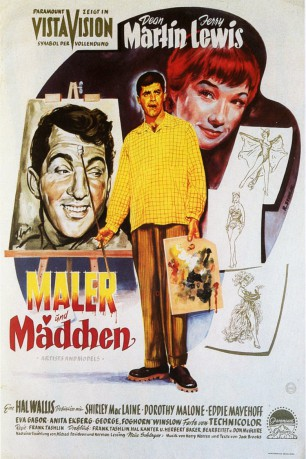
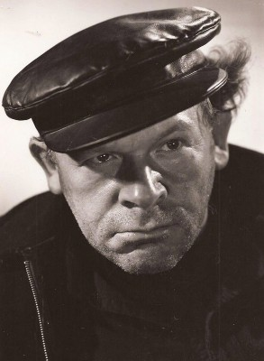
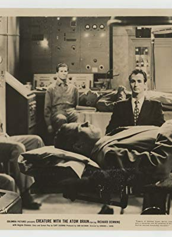

#12012 Agentenschreck - Maler und Mädchen
Alternativ: Artists and Models (Englischer Titel)
 
 IMDB-Wertung: 6.6 / 10
IMDB-Wertung: 6.6 / 10  Tomatometer: 78
Tomatometer: 78  Metascore: 0
Metascore: 0 
Rick Todd ist Maler, verdient jedoch sein Geld mit Zeichnen von Comics. Er teilt sich mit seinem Kumpel Eugene Fullstack eine Wohnung. Eugene möchte gern Schriftsteller werden. Er schreibt kleine süße Kindergeschichten, während Rick blutrünstige Comics zeichnet. Eugene weiß jedoch nicht, dass Rick seine Einfälle bei Eugene stiehlt. Eugene hat nämlich nachts schreckliche Albträume. Held seiner gruseligen Traumgeschichten ist Vincent, der Falke. Vincent, der Falke ist auch die Hauptfigur der Comics von Rick. Eugene träumt ihn als ein Drittel Junge, ein Drittel Mann und ein Drittel Vogel. Eines Nachts träumt Eugene eine Geheimformel für die Raketenforschung, die tatsächlich existiert. Rick benutzt diese für seine Comicgeschichte und so wird sie veröffentlicht. Dies ruft sowjetische Agenten auf den Plan, die nun Jagd auf Eugene machen
Jahr: 1955
Dauer: 109 Minuten
FSK: 12
Land: USA Studio: Paramount PicturesTonspuren: AAC2.0 - ,
Untertitel: Englisch,
Auflösung: 1080p (1920x1080) Größe: 7987 MB
Genre: Komödie, Liebe, Musical
Regisseur: Frank Tashlin
Drehbuch: Herbert Baker, Michael Davidson, Hal Kanter, Norman Lessing, Don McGuire
Soundtrack: Walter Scharf
Darsteller:
 Dean Martin als Rick Todd
Dean Martin als Rick Todd Jerry Lewis als Eugene Fullstack
Jerry Lewis als Eugene Fullstack Shirley MacLaine als Bessie Sparrowbrush
Shirley MacLaine als Bessie Sparrowbrush Dorothy Malone als Abigail 'Abby' Parker
Dorothy Malone als Abigail 'Abby' Parker Eva Gabor als Sonia / Mrs. Curtis
Eva Gabor als Sonia / Mrs. Curtis- Anita Ekberg als Anita
- George Winslow als Richard Stilton
 Jack Elam als Ivan
Jack Elam als Ivan- Herbert Rudley als Secret Service Chief Samuels
- Richard Webb als Secret Service Agent Peters
-  Otto Waldis als Kurt
- Jane Adrian als Dancer (uncredited)
 Gertrude Astor als (uncredited)
Gertrude Astor als (uncredited)- Sharon Baird als Dancer (uncredited)
- Art Baker als TV Commentator (uncredited)
- Sara Berner als Mrs. John Stilton (uncredited)
- Susan Brown als (uncredited)
 Clancy Cooper als Police Officer (uncredited)
Clancy Cooper als Police Officer (uncredited)- Minta Durfee als (uncredited)
 Charles Evans als Gen. Traynor (uncredited)
Charles Evans als Gen. Traynor (uncredited) Franklyn Farnum als Man on TV Panel Show (uncredited)
Franklyn Farnum als Man on TV Panel Show (uncredited) Bess Flowers als Stork Club Patron (uncredited)
Bess Flowers als Stork Club Patron (uncredited) Kathleen Freeman als Mrs. Muldoon (uncredited)
Kathleen Freeman als Mrs. Muldoon (uncredited) Steven Geray als Kurt's Associate (uncredited)
Steven Geray als Kurt's Associate (uncredited) James Gonzalez als Fashion Show Spectator (uncredited)
James Gonzalez als Fashion Show Spectator (uncredited)- Frances Grant als Dancer (uncredited)
- Gene Jackson als Child Street Dancer (uncredited)
 Allen Jaffe als Passerby on Sidewalk (uncredited)
Allen Jaffe als Passerby on Sidewalk (uncredited)- Frank Jenks als Piano-Mover (uncredited)
- Frances Lansing als Cigarette Girl (uncredited)
- Eve Meyer als Model (uncredited)
- Eve Miller als (uncredited)
 Harold Miller als Fashion Show Patron (uncredited)
Harold Miller als Fashion Show Patron (uncredited) Jeanette Miller als Girl (uncredited)
Jeanette Miller als Girl (uncredited)- Patricia Morrow als Zuba Girl (uncredited)
 Emory Parnell als Mr. Kelly (uncredited)
Emory Parnell als Mr. Kelly (uncredited)-  Michael Ross als Piano-Mover (uncredited)
 Jeffrey Sayre als Bartender (uncredited)
Jeffrey Sayre als Bartender (uncredited) Charles Sherlock als Stork Club Patron (uncredited)
Charles Sherlock als Stork Club Patron (uncredited)- Larri Thomas als Masseuse (uncredited)
 Martha Wentworth als Fat Lady (uncredited)
Martha Wentworth als Fat Lady (uncredited) Carleton Young als Col. Drury (uncredited)
Carleton Young als Col. Drury (uncredited)- Eddie Mayehoff als Mr. Murdock
- Richard Shannon als Secret Service Agent Rogers
- Alan Lee als Otto
- Nancy Abbate als Little Girl (uncredited)
- Rosemarie Ace als (uncredited)
- Heather Ames als (uncredited)
- Babette Bain als Little Girl (uncredited)
- Margaret Barstow als Murdock's Eating Blonde Daughter (uncredited)
Datei: X:\Person\Jerry Lewis\Agentenschreck - Maler und Mädchen (1955, FSK12, 1920x1080).mkv seit 11.11.2019
Festplatte: HD Collection-7+mehr(A-Z)+Person
 Es gibt insgesamt 7 Filme in der Gruppe 'Person\Jerry Lewis'
Es gibt insgesamt 7 Filme in der Gruppe 'Person\Jerry Lewis'